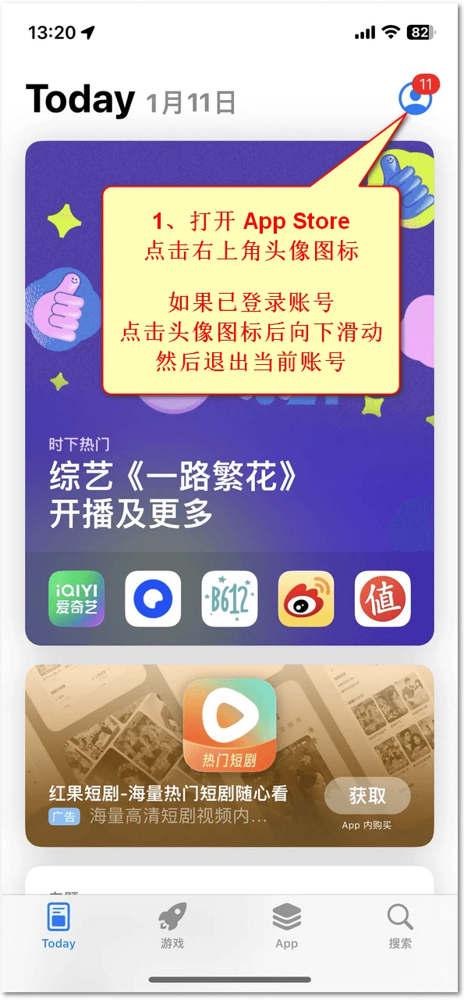
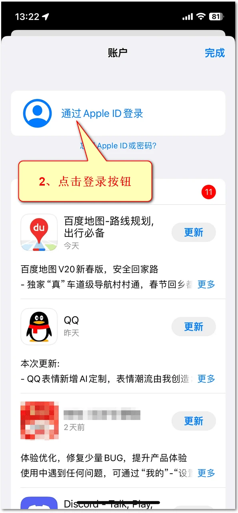

如何购买苹果美区id和小火箭
即使你运营的是日本、迪拜（阿联酋）或其他地区的 TikTok，也可以用美区 Apple ID 下载 TikTok，无需专门购买当地的 Apple ID。这里用到 Apple ID 的地方是 iPhone 上的 App Store，下载后照常登录你要运营的 TikTok 账号。
为什么要买带小火箭的美区 Apple ID？
想在 iPhone 上装 TikTok 和小火箭（Shadowrocket），可以用美区 Apple ID 登录美区 App Store。TikTok 可以免费下载，小火箭则需要付费。如果你正准备买美区 ID，一开始就选「已购 Shadowrocket」的账号更省事：登录后，TikTok 点「获取」，小火箭点云朵下载，省去了单独为小火箭付款的步骤。
-
选「已购 Shadowrocket 美区账号（独享）」
下面两家都提供已购 Shadowrocket 的美区独享账号，商品信息以第三方网站当前页面为准，购买前请自行核对价格、库存和售后条款。
选择一 · KX Store：已购 Shadowrocket 美区账号（独享）
选择二 · ReeGifts（睿礼果号）：美区独享账号，已购小火箭

图为 KX Store 商品页。下方的「电子邮箱」填你用来收订单的邮箱。 -
留下收件邮箱，付款后保存订单
填入自己能立即收信的邮箱，买一个账号就把数量留在 1。核对总价，选页面提供的支付方式，再点「提交订单」完成付款。
保存订单号，按订单页或发货邮件的提示领取 Apple 账号和登录资料。下单填写的邮箱只用于收件，Apple 账号的绑定邮箱还要在下一步手动更改。没收到邮件，先查垃圾邮件和订单状态，再用订单号联系商家，避免重复付款。
-
收到账号后，马上改绑邮箱、手机号并修改密码
收到登录资料并确认账号可用后，立即按照商家的图文教程操作。在 Apple 账户管理页面，把登录邮箱换成你自己长期使用的邮箱，并输入邮件验证码。查看商家提供的改绑图文教程
在「登录与安全」里，把自己的手机号添加为受信任电话号码，按提示完成验证。再把商家提供的初始密码换成只有你知道的新密码并保存。以后登录这个美区 ID，就用改绑后的邮箱和新密码。打开 Apple 账户管理
-
只在 App Store 切换到美区账号
在 iPhone 上打开蓝色的 App Store，点右上角头像。如果这里显示你平常用的账号，滑到账户页底部点「退出登录」。再回到账户页，选用其他 Apple 账户登录，输入刚绑定的邮箱和新密码，按提示完成验证。

从商店右上角的头像进入账户页。点图可放大。 
从账户页登录已改绑的美区 ID。不同 iOS 版本的按钮位置可能略有变化。 -
找到小火箭，点云朵下载
在 App Store 点「搜索」，输入 Shadowrocket。核对开发者是 Shadow Launch Technology Limited，再点右侧带向下箭头的云朵。按钮变成「打开」后，点一下就能启动。查看美区 App Store 正版应用

旧版商店截图。认准应用名称和同一行的云朵下载按钮。 如果看到的是价格，先别点付款。 回到商店头像，核对登录的账号，再依次点「App 和购买记录」→「你的 App」，搜索 Shadowrocket。如果找不到，让商家凭订单核实已购记录。以后重装或更新时也可能需要这个账号，请保管好登录资料。Apple 重新下载指南